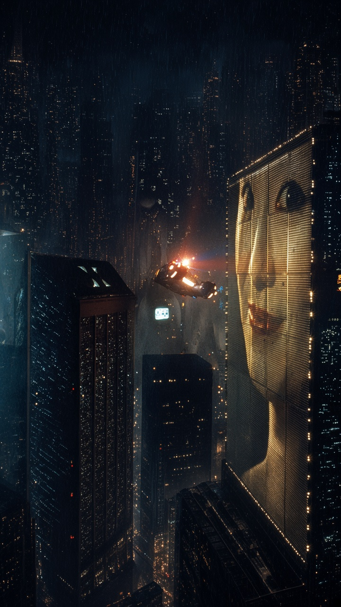

“I’ve seen things you people wouldn’t believe.
Attack ships on fire off the shoulder of Orion.
I watched C-beams glitter in the dark near the Tannhäuser Gate.
All those moments will be lost in time, like tears in rain.
Time to die.”
Roy Batty saves Deckard because, in his final moments, he chooses empathy and the pure value of life over revenge.
Throughout the film, Roy is a Nexus-6 replicant fighting for more life. Deckard has been hunting and killing his fellow replicants. By all logic, Roy should let Deckard fall to his death.
Instead, as Deckard hangs from the rooftop, Roy reaches down, pulls him to safety, delivers the “Tears in Rain” speech, and dies.
Rutger Hauer (who largely wrote the speech) and Ridley Scott described Roy’s last act as one of grace. He dies not as a machine seeking revenge, but as a being who, having tasted life so fiercely, decides to give some of it back.